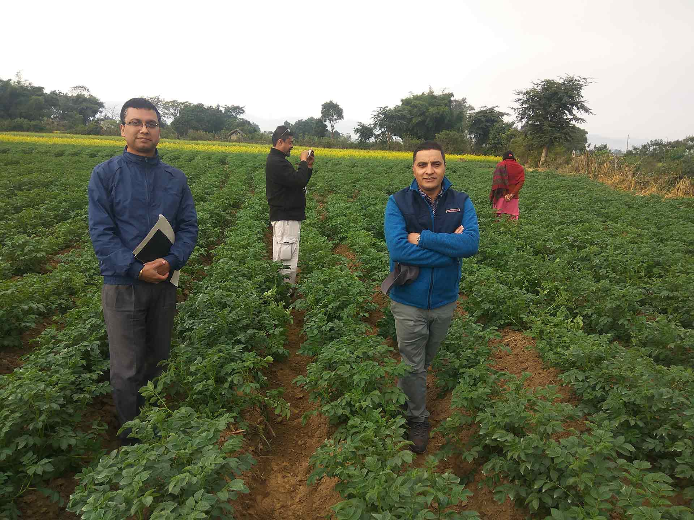

कृषि व्यवसाय अनुदान आह्वान सम्बन्धी सूचना (सातौँ कल)
Historical RISMFP agricultural-business grant application notice from the seventh call.
Archive source: former RISMFP document listing. Original file was not preserved in this repository.
RISMFP reports and documents
Search document titles retained from the former RISMFP website. This index identifies historical records but does not claim to provide verified downloadable copies.

Historical document index
These entries are archival references. Use the official-source and Wayback Machine links to research whether an authoritative copy is available elsewhere.
Historical RISMFP agricultural-business grant application notice from the seventh call.
Archive source: former RISMFP document listing. Original file was not preserved in this repository.
Historical list of Mid-Western subprojects recommended for grant-agreement negotiation under categories 2 and 3.
Archive source: former RISMFP document listing. Original file was not preserved.
Historical notice extending the registration deadline for RISMFP agricultural-business grant applications.
Archive source: former RISMFP document listing. Original file was not preserved.
Historical annual progress-report title retained from the former project document index.
Archive source: former RISMFP document listing. Original report file was not preserved.
Historical RISMFP agriculture bulletin title retained from the former project archive.
Archive source: former RISMFP document listing. Original bulletin file was not preserved.
Historical RISMFP administration-manual reference. Use an official institutional source for an authoritative copy.
Archive source: former RISMFP document listing. Original manual file was not preserved.
Try a shorter keyword, search part of the Nepali title, or choose “All records.”